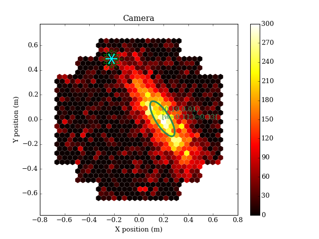
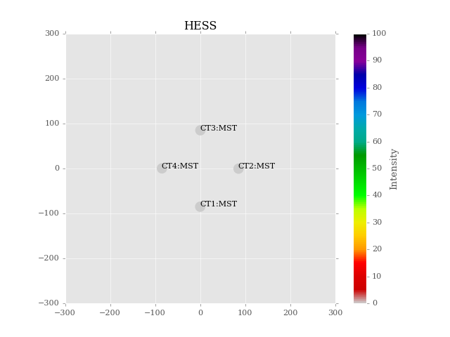

Visualization¶
Introduction¶
This module provides methods to display various information related to events and reconstruction, like Cherenkov Camera images, image parameterizations, etc. The default implementation uses MatPlotLib to render displays, but in the future more rendering methods may be supported.
The main classes are:
Getting Started¶
"""
Example of drawing a Camera using a mock shower image
"""
import matplotlib.pylab as plt
from ctapipe import io, visualization
from ctapipe.reco import mock
from ctapipe.reco import hillas_parameters_2 as hillas_parameters
def draw_neighbors(geom, pixel_index, color='r', **kwargs):
""" draw lines between a pixel and its neighbors"""
neigh = geom.neighbors[pixel_index] # neighbor indices (not pixel ids)
x, y = geom.pix_x[pixel_index].value, geom.pix_y[pixel_index].value
for nn in neigh:
nx, ny = geom.pix_x[nn].value, geom.pix_y[nn].value
plt.plot([x, nx], [y, ny], color=color, **kwargs)
if __name__ == '__main__':
# load the camera
geom = io.CameraGeometry.from_name("hess", 1)
disp = visualization.CameraDisplay(geom)
disp.set_limits_minmax(0, 300)
disp.add_colorbar()
# create a fake camera image to display:
model = mock.generate_2d_shower_model(centroid=(0.2, 0.0),
width=0.01,
length=0.1,
psi='35d')
image, sig, bg = mock.make_mock_shower_image(geom, model.pdf,
intensity=50,
nsb_level_pe=1000)
# apply really stupid image cleaning (single threshold):
clean = image.copy()
clean[image <= 3.0 * image.mean()] = 0.0
# calculate image parameters
hillas = hillas_parameters(geom.pix_x.value, geom.pix_y.value, clean)
print(hillas)
# show the camera image and overlay Hillas ellipse
disp.image = image
disp.overlay_moments(hillas, color='seagreen', linewidth=3)
# draw the neighbors of pixel 100 in red, and the
# neighbor-neighbors in green
for ii in geom.neighbors[130]:
draw_neighbors(geom, ii, color='green')
draw_neighbors(geom, 130, color='cyan', lw=2)
plt.show()
(Source code, png, hires.png, pdf)
{kind=link}
{kind=link}

from ctapipe import io
from ctapipe.visualization import ArrayDisplay
import matplotlib.pylab as plt
if __name__ == '__main__':
plt.style.use("ggplot")
layout = io.get_array_layout("hess")
X = layout['POSX']
Y = layout['POSY']
A = layout['MIRAREA']
A[:] = 132
ad = ArrayDisplay(X, Y, A, title="HESS")
# label them
for tel in layout:
name = "CT{tid}:{tclass}".format(tid=tel['TELID'],
tclass=io.tel_class_name(tel['CLASS']))
plt.text(tel['POSX'], tel['POSY'], name)
ad.axes.set_xlim(-300, 300)
ad.axes.set_ylim(-300, 300)
plt.show()
(Source code, png, hires.png, pdf)
{kind=link}
{kind=link}

Reference/API¶
ctapipe.visualization Package¶
Visualization: Methods for displaying data
Classes¶
ArrayDisplay(telx, tely, mirrorarea[, axes, ...]) |
Display a top-town view of a telescope array |
CameraDisplay(geometry[, image, ax, title, ...]) |
Camera Display using matplotlib. |